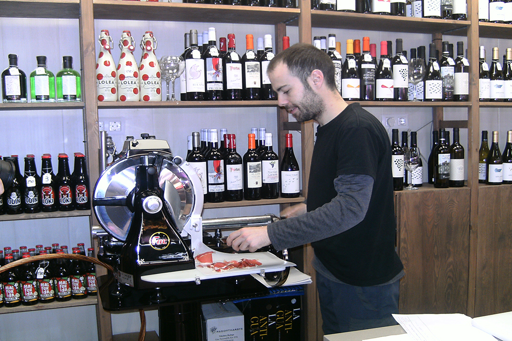

Botiga gourmet nascuda el 2019 de la má del jove emprendedor
Sergio Martínez Garrido , que compta amb una gran varietat de vins de diferents denominacions encara que predominen els productes d'origen valencians, aixina com dels altres tipus de productes.
Entre les nostres begudes també pots trobar caves, vermuts, licors, hidromel, i 12 varietats de cervesa artesana de València de la prestigiosa marca Birra&Blues.
Però no ens quedem en la beguda, a El Raconet també podràs trobar una gran gamma de formatges, embotits, ibèrics melmelades, patés, i cremes artesanes que farán dels teus dinars i events un record d'un sabor especial...
Preparem taules d'ibèrics i formatges per encàrrec, tant per recollir en botiga com a domicili.
Es realitzen degustacions gratuïtes a la parada cada 15 dies.
Tiquets de Pàrquing per compres superiors a 10 €
AQUI VA EL VIDEO